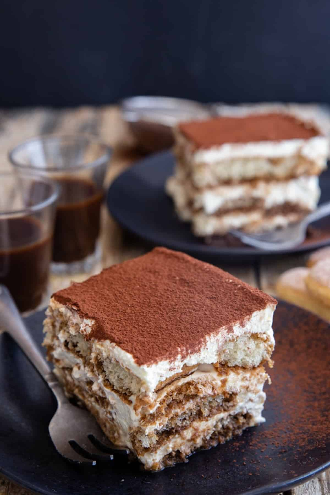

Tiramisu

Description
In my house there is nothing that goes faster than a Tiramisu.
Ingredients
- Lady fingers
- Coffee
- Egg
- Sugar
- Mascarpone
- Cream
- Cocoa
Steps
- In a large bowl with a hand mixer or using the whisk attachment on a stand mixer beat together the sugar and the egg (if using) until frothy, then add the mascarpone and cream, beat until thickened.
- In the baking dish place a coffee dipped ladyfinger on the bottom, top with 1/3 of the mascarpone mixture and continue for another two layers, finish with the remaining mascarpone mixture.
- Refrigerate for at least 2-3 hours or even better overnight. Just before serving sprinkle with unsweetened cocoa powder.